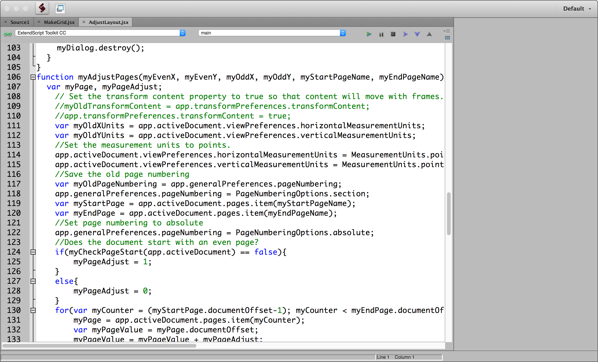
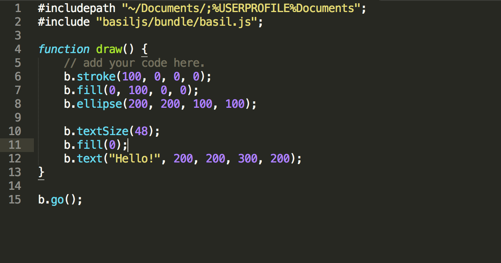
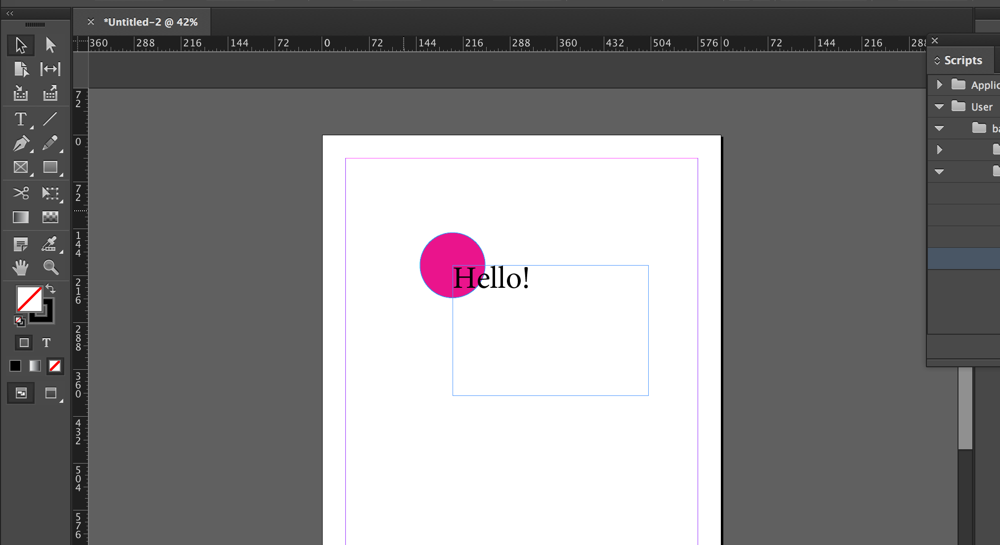

Machine Learning and Graphic Design
Why scripting?
- Automate repetitive tasks.
- Control layouts using algorithms.
- Use external data as sources.
- Connect to the web.
InDesign Scripting
Basil.js
- Makes scripting (relatively) easier.
- Similar to how Processing works.
Compared to Processing
- Java(Processing) vs. JavaScript(basil.js)
- Move and edit items after running the script
- Manage the layers.
- Save as a regular InDesign file.
- Undo.
- Cannot draw on the pixel level.
- No interactivity.
Installation
This installation can be a little tricky if you have never used the Terminal app before. The installation guide is available.
Download the latest package from here.
Unzip the file and change the folder name to basiljs.
Move the entire folder into your Documents folder.
ex. USERNAME > Documents > basiljs > bundle
Inside the basiljs folder, create user folder.
This is where you will store your own scripts.

Open InDesign. Open the Scripts panel.
Right-click on User folder,and choose Reveal in Finder.

It will direct you to Scripts Panel, which should be empty.
open the Terminal app.
Applications > Utilities > Terminal
Type in the following command into the Terminal.
ln -s basiljs-PATH Scripts-Panel-PATH

Instead of typing the paths, drag & drop the folders into the Terminal window.
ln -s basiljs-PATH Scripts-Panel-PATH
Now, you will see the basiljs in the Scripts panel in InDesign.

Create and run scripts
Code editors
Download ExtendScript Toolkit or use any other code editors such as Brackets or Sublime Text.
Start with a template
You will find template.jsx in basiljs > bundle > scripts.
Copy the file into user folder and rename it.
Open the file, and type the code as below.
Go back to InDesign, and run the script by double-clicking it inside the Scripts panel.
Tutorials
There are beginner's tutorials on the website, and many examples are included in basiljs > bundle > scripts folder.
Examples
Download example scripts here.